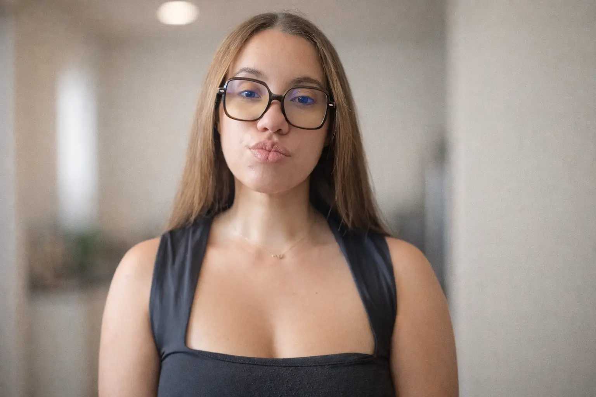
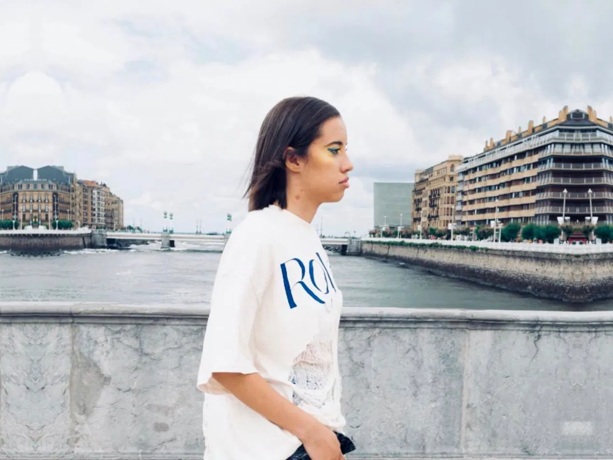

Branding & Identidad Visual
Recursos visuales, presentaciones corporativas y sistemas de diseño para marcas nacionales e internacionales.
Soy Amanda Pires, diseñadora UX/UI y de marca. Combino interfaz, diseño editorial, branding e ilustración para transformar información compleja en soluciones claras y con intención.

Cuatro líneas de trabajo. Entra en cada catálogo para ver sus proyectos.
Desde la identidad de marca hasta el prototipado en Figma y la maquetación web con HTML/CSS.
Recursos visuales, presentaciones corporativas y sistemas de diseño para marcas nacionales e internacionales.
Interfaces intuitivas y prototipos navegables en Figma enfocados en resolver necesidades reales.
Traducción visual de conceptos complejos, maquetación editorial e ilustración científica y divulgativa.

Soy diseñadora UX/UI y gráfica. Trabajo con marcas y personas que necesitan claridad: mi enfoque es atento, directo y apoyado en rigor técnico.
Creo que el buen diseño no decora, ordena. Es el espacio donde la información compleja se vuelve clara, funcional y coherente, con menos ruido y más intención. Del concepto a la ejecución digital, adaptado a cada soporte.
↓ baja y mueve la ★ por mi recorrido
★ nivel completado
Ver los trabajos →Cuéntame qué necesitas y te responderé lo antes posible. También podemos conectar por correo o LinkedIn.